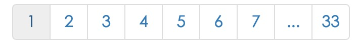
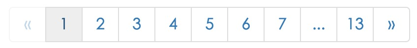
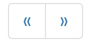

介绍
reactjs-pagination是一个react的本地分页组件，支持页码、跳转、和迷你模式。
安装
npm install --save reactjs-pagination
参数介绍
* totalNumber表示数据总数
* pageSize表示一页显示的数据
* currentPage表示当然初始化所在的页码，默认为1
* middlePage为页码中间所显示的页数。默认为5
* onChange 当页码被改变调用的函数，改函数有一个参数即当前改变的页码
* showPages 是否显示分页页码
* showPrev 是否显示上一页按钮
* showNext 是否显示下一页按钮
* showGo 是否显示跳转按钮
最小化调用
import React, { Component } from 'react';
import { Pagination } from 'reactjs-pagination';
class Test extends Component {
state = {
totalNumber: 326,
pageSize: 10,
currentPage: 31
};
constructor(props) {
super(props);
}
handleChange = (idx) => {
console.log('页码改变 => ', idx);
}
render() {
const {
totalNumber,
pageSize,
currentPage
} = this.state;
return (
<div>
<Pagination
totalNumber={totalNumber}
pageSize={pageSize}
middlePage={5}
onChange={this.handleChange}
/>
</div>
)
}
}

显示上一页和下一页按钮
showPrev和showNext属性是分别显示上一页按钮和下一页按钮。可以单独设置
<Pagination
totalNumber={totalNumber}
pageSize={pageSize}
middlePage={5}
onChange={this.handleChange}
showPrev
showNext
/>

显示跳转输入框和跳转按钮
showGo属性控制跳转输入框和跳转按钮的显示
<Pagination
totalNumber={totalNumber}
pageSize={pageSize}
middlePage={5}
onChange={this.handleChange}
showGo
/>
迷你模式
<Pagination
totalNumber={totalNumber}
pageSize={pageSize}
middlePage={5}
onChange={this.handleChange}
showPages={false}
showPrev
showNext
/>

自定义皮肤
如果需要自定义皮肤，只需要根据类名进行覆盖即可